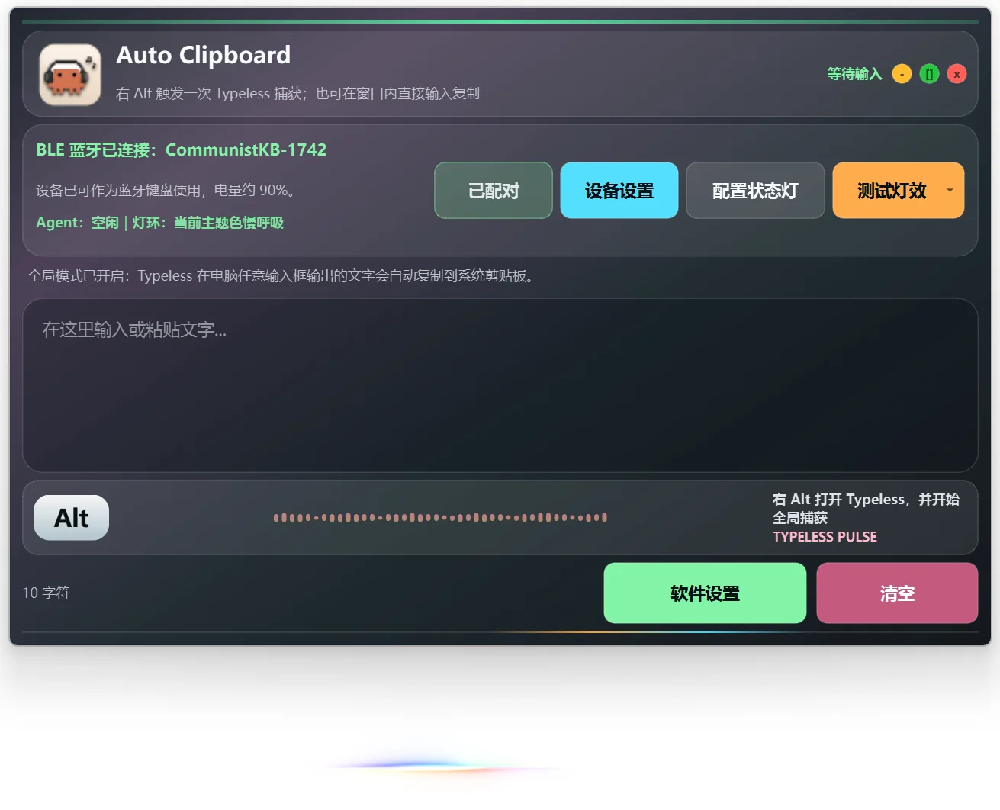

Profile 管理
为 Codex、Claude、演讲或不同项目保存独立图标、按键和灯效。
ZKO AI CODING HANDLE
实体确认、宏键输入、Agent 状态和小屏反馈，集中到一只专为语音编程与 AI Agent 打造的手柄。
让 Codex 自动安装 AutoClipboard、识别 D4/V3、连接 Agent Hook 并配置按键；高风险操作仍会先向你确认。
支持 Windows、Linux、macOS，以及 Claude Code、Cursor、OpenCode 等 Agent Skills 客户端。
国内用户默认使用 Gitee。需要 Ubuntu、macOS、固件或历史版本？查看全部发布文件

Right Alt、Enter、Ctrl+V 与常用组合键触手可及。
工作、授权、完成与阻塞，通过灯环和屏幕即时反馈。
用 AutoClipboard 管理 Profile、按键、灯效、图标和固件。
PHYSICAL MACROS
默认映射覆盖语音输入和 AI 编程中最常用的动作。按下即可触发，也能在 AutoClipboard 中按自己的工作方式重新定义。

AGENT SIGNAL
灯环显示运行状态，小屏呈现 Profile、蓝牙、电量、时间与 Agent 数量。余光即可知道任务是否在继续推进。

AUTOCLIPBOARD
基础蓝牙键盘宏可以独立使用；Agent 状态同步、Profile 快开、IMU 预览和深度配置需要 AutoClipboard 在后台运行。

为 Codex、Claude、演讲或不同项目保存独立图标、按键和灯效。
调整亮度、主题色、显示模式、自定义图标和蜂鸣器音量。
通过 Type-C 识别设备、检查状态并在受控流程中更新固件。
MICROPHONE READY
重点适配 DJI Mic 一代与 DJI Mic 2 二代；其他型号可以按外形和使用方式确认，或沟通定制适配件。
大疆麦克风仅作为适配与使用场景展示，不包含在包装内。

START HERE